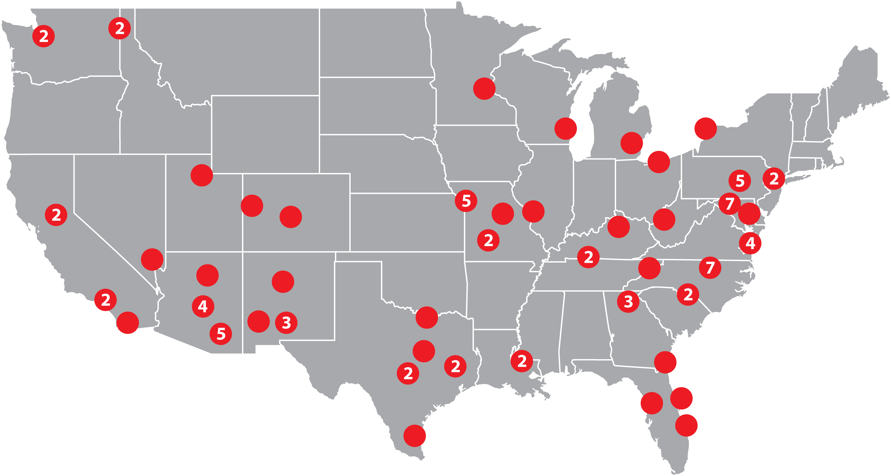

Clients
Trusted Execution Partner for Federal and Institutional Portfolios
Occupied Flooring Solutions (OFS) supports federal agencies, GSA-leased property owners, and institutional real estate operators who require controlled renovation within active environments.
Our clients engage OFS not as a traditional contractor, but as a disciplined execution partner capable of delivering measurable results inside occupied facilities.

Federal & Government Experience
OFS has delivered occupied flooring and interior surface programs supporting facilities for:
- Federal Aviation Administration
- National Oceanic and Atmospheric Administration
- Federal Trade Commission
- Department of Transportation
- Department of Defense
- FBI
- ICE
- DEA
Our work spans mission-critical offices, administrative centers, and secure federal environments across multiple states. We understand the operational sensitivity, scheduling constraints, and compliance discipline required in government settings.
GSA-Leased Asset Owners & Institutional Portfolios
OFS works closely with property owners and asset managers overseeing GSA-leased and federal portfolios, including:
- Multi-state commercial office portfolios
- Institutional real estate platforms
- Capital improvement programs tied to lease renewals
- SFO-driven interior requirements
- Portfolio-wide cyclical replacement initiatives
Our programs align flooring execution with asset lifecycle planning and capital forecasting.
National Reach. Consistent Standards.
OFS has completed more than 1,200 projects and installed over 15 million square feet of occupied flooring nationwide — deploying the same standardized methodology across every region, facility type, and geography.
Who We Serve
OFS supports:
- Federal agencies and facility managers
- GSA-leased asset owners
- Institutional real estate investors
- Property management firms
- Prime contractors and GovCon partners
- Mission-critical commercial tenants
Our clients value predictability, operational continuity, and portfolio-level visibility.
Why Clients Choose OFS
Clients select OFS for controlled execution, not lowest bid. We provide lift-and-replace methodology that preserves live operations, metric-driven oversight, and single-point national accountability — reducing operational risk across every engagement.
Built for Long-Term Partnerships
OFS builds repeatable programs, not one-time projects.
Our clients often engage us for:
- Multi-year upgrade cycles
- Portfolio-level replacement initiatives
- Integrated flooring and painting programs
- Capital planning alignment across states
We become a consistent part of facilities and asset management teams — ensuring execution quality across properties and over time.
Let’s Evaluate Your Portfolio
Whether managing a single federal facility or a multi-state institutional portfolio, OFS provides disciplined execution within active environments.
Request a Portfolio Review
Schedule a Program Consultation
Download Capability Statement